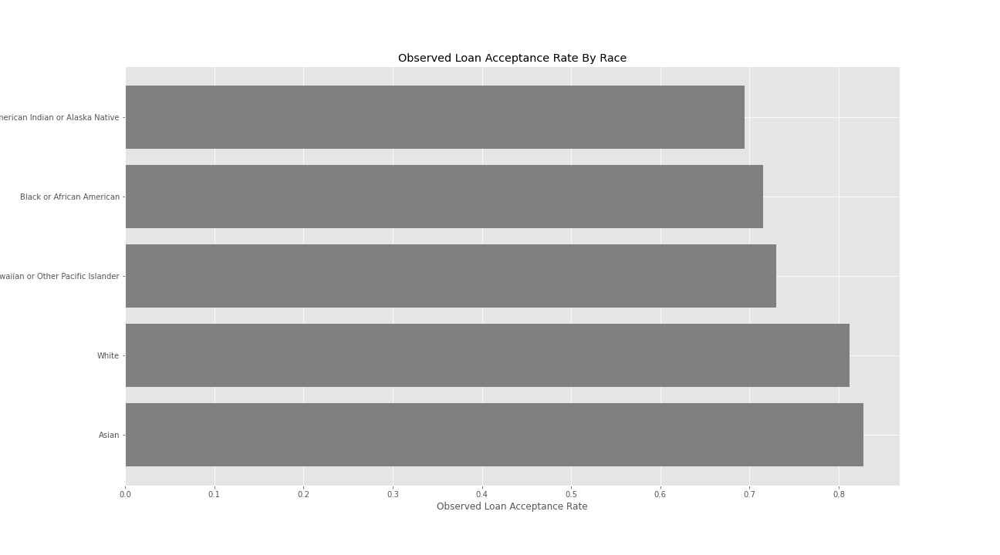
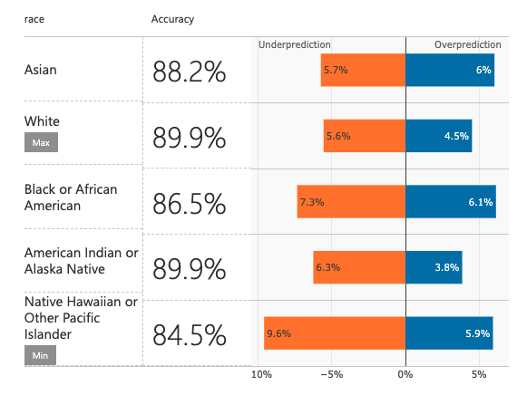
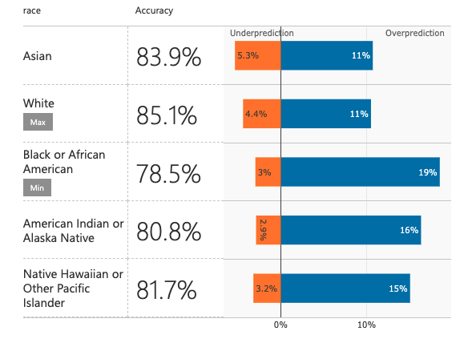

By: Aurelio Barrios | Jan 14, 2022 • 8 min read
The field of Data Science has exploded in recent years. From Netflix recommendations, self driving cars and even mortgage loans; Data Science and its algorithms are being used on a daily basis. With this field being in its infancy there comes a lot of hype as well as a lot of uncharted territory. Data Science as a tool is a double edged sword. AI being deployed in the real world is highly innovative but also dangerous especially when these algorithms are being deployed to make sensitive decisions.
It is easy to think that since algorithms are not necessarily human then therefore they are incapable of being biased. After all, most of these algorithms are highly complex and trained on tons of data. Well this isn't necessarily the case, there are plenty of examples on how AI algorithms can be extremely unfair and in some cases borderline racist. This is not to say that the human behind the algorithm is manually creating and inserting these biases in the algorithm, but somewhere along the algorithm pipeline something is going extremely wrong.
In May of 2016, ProPublica published an informative article on how the Correctional Offender Management Profiling for Alternative Sanctions (COMPAS) tool -used to assess the likelihood of an offender committing a future crime- was biased against blacks. The article found that this algorithm was incorrectly predicting that black defendants were twice as likely to reoffend than white defendants.
Most recently in 2021, TheMarkup reported on the bias found in mortgage loan approval algorithms. They found that people of color were 40% to 80% more likely to be denied a loan when compared to white individuals. The article uses the Home Mortgage Disclosure Act (HMDA) data that is now public to come to their conclusion.
Although we cannot fault the individuals behind these algorithms for falsely believing that lines of code are not biased, we can demand more from the teams deploying these algorithms. It is the responsibility of the deployment team to ensure that these models are reviewed and proven to be fair before they go out to the real world. It is no longer enough to simply create and deploy. Modern models should meet an ethical standard especially those that make life altering decisions.
The aim of this project is to tackle the bias found in mortgage loan approval algorithms. In order to do this we must build our own machine learning predictor. This predictor will use historical mortgage approval data to predict whether new applicants will get approved. Since this algorithm will be allocating resources such as a home, it is essential that this algorithm is fair for all individuals.
When building such a sensitive model it is critical that we understand what real world bias is being captured in the training dataset. A machine learning model is not aimed at being biased. But if we train on data that is biased, we cannot expect to create a machine learning algorithm that is not biased. For this model we will be using the California HMDA data from 2017. It does not take much data exploration to see that this dataset is capturing some real world bias.
Observed Loan Acceptance Rates By Race for California HMDA 2017 Dataset
It is not hard to notice that there is a significant difference between the acceptance rates for each race. White and Asian individuals have a mortgage acceptance rate higher than 80%, while the rest have an observed acceptance rate of around 70%. In order to prevent allocative harm within our model we should hope that our model does not have a significant difference in selection rates by race. After all, race should not have any weight on the acceptance decision.
When it comes to prediction algorithms there is a huge emphasis on accuracy. The goal of the game is how to make a model as accurate as possible. It is only those models that are highly accurate that are being deployed to the real world. Using this ideal we build a baseline model that achieves an 89.6% accuracy on the test dataset. This model shows us that there is a huge fault in thinking that accuracy should be the only metric that is relevant.
Initial Baseline Machine Learning Prediction Model Error Rates For Test Set Predictions
Initial Baseline ML Prediction Model Selection Rates For Test Set Predictions
When we consider that this model was built on biased data we recognize that accuracy here means modeling the bias found in the dataset. We see how the model is very accurate across race selection. This also means that the acceptance rates follow the same distribution as those found in the real world. This is a huge problem.
When we build models on biased data we enter a vicious never ending cycle. This is because the very same prejudice that is being captured in the data used to train, will then be reinforced with a machine learning model that will be the basis for future datasets. When these models make a prediction, these predictions are then recorded as data points which will then train future models. Biased datasets create biased predictions models which then further create biased datasets.
Every machine learning model should implement a fairness metric. Using the demographic parity fairness metric we build a model that has a respectable 84.5% accuracy on the test set whilst also being fair.
Demographic Parity ML Prediction Model Error Rates For Test Set Predictions
Demographic Parity ML Prediction Model Selection Rates For Test Set Predictions
We must recognize that there exists a tradeoff between fairness and accuracy. This is because we cannot expect a fair model to be exactly accurate when it is being trained on unfair data. There is a 5.1% difference between our first unfair model and our second fair model. This is a minor price to pay for a model that is 142.857% fairer (calculated using demographic parity difference of both models: 0.18 & 0.03). The keypoint here is noticing that there is no significant difference in the selection rates between different races.
When we build a model that is fair we end the vicious cycle of creating datasets that parallel biases found in the real world. We must move away from the idea of prioritizing accuracy in a model. It is entirely acceptable to sacrifice some accuracy for better fairness because sometimes being accurate means modeling and deploying the biases of the past. Fairness in a model should not be a feature that is only present in a few models, it also should not be something that is only done in research. Every model being deployed to the real world should be required to have an implemented fairness metric. If not we will be stuck with the discrimination of the past.
Thanks for reading!
For a more in-depth look at this project feel free to check out this projects GitHub repository which includes code and a report.